Type I error control evaluation
jhsiao999
2018-11-15
Last updated: 2019-01-09
workflowr checks: (Click a bullet for more information)-
✔ R Markdown file: up-to-date
Great! Since the R Markdown file has been committed to the Git repository, you know the exact version of the code that produced these results.
-
✔ Environment: empty
Great job! The global environment was empty. Objects defined in the global environment can affect the analysis in your R Markdown file in unknown ways. For reproduciblity it’s best to always run the code in an empty environment.
-
✔ Seed:
set.seed(20181115)The command
set.seed(20181115)was run prior to running the code in the R Markdown file. Setting a seed ensures that any results that rely on randomness, e.g. subsampling or permutations, are reproducible. -
✔ Session information: recorded
Great job! Recording the operating system, R version, and package versions is critical for reproducibility.
-
Great! You are using Git for version control. Tracking code development and connecting the code version to the results is critical for reproducibility. The version displayed above was the version of the Git repository at the time these results were generated.✔ Repository version: c173252
Note that you need to be careful to ensure that all relevant files for the analysis have been committed to Git prior to generating the results (you can usewflow_publishorwflow_git_commit). workflowr only checks the R Markdown file, but you know if there are other scripts or data files that it depends on. Below is the status of the Git repository when the results were generated:
Note that any generated files, e.g. HTML, png, CSS, etc., are not included in this status report because it is ok for generated content to have uncommitted changes.Ignored files: Ignored: .Rhistory Ignored: .Rproj.user/ Ignored: .sos/ Ignored: analysis/.sos/ Ignored: analysis/figure/ Ignored: dsc/.sos/ Untracked files: Untracked: analysis/sim_power_berge_pbmc.Rmd Untracked: dsc/benchmark.sh Untracked: dsc/code/zinbwaveZinger/ Untracked: dsc/config.yaml Untracked: dsc/data/pbmc.rds Untracked: dsc/data/pbmc_counts.rds Untracked: dsc/data/pbmc_counts_sub.rds Untracked: dsc/modules/process_data.R Untracked: dsc/modules/process_data.dsc Untracked: dsc/modules/sim_data.R Untracked: dsc/modules/sim_data.dsc Untracked: dsc/monitor.py Untracked: dsc/monitor_output/ Untracked: dsc/power_berge.dsc Untracked: dsc/type1_berge.dsc Untracked: dsc/type1_simple.dsc Untracked: output/ Unstaged changes: Modified: analysis/index.Rmd Modified: dsc/benchmark.dsc Modified: dsc/data/README.md Modified: dsc/modules/get_data.R Modified: dsc/modules/get_data.dsc
Expand here to see past versions:
| File | Version | Author | Date | Message |
|---|---|---|---|---|
| Rmd | c173252 | Joyce Hsiao | 2019-01-09 | updates |
| Rmd | 4597da6 | Joyce Hsiao | 2018-11-28 | updates |
| Rmd | 74e3287 | Joyce Hsiao | 2018-11-21 | add dsc code |
| Rmd | 59ff4e0 | jhsiao999 | 2018-11-20 | updates |
| html | 75c78c9 | jhsiao999 | 2018-11-16 | Build site. |
| Rmd | afbb687 | jhsiao999 | 2018-11-16 | add DESeq2 |
| html | 5dd99de | jhsiao999 | 2018-11-15 | Build site. |
| Rmd | c3707b4 | jhsiao999 | 2018-11-15 | prelim results on two-sample tests |
| html | a85bfe7 | jhsiao999 | 2018-11-15 | add back htmls |
| Rmd | 77988c2 | jhsiao999 | 2018-11-15 | first commit |
| Rmd | 0cc76ea | jhsiao999 | 2018-11-15 | first commit |
Overview
We applied two-sample tests for mean difference to simulated datasets.
The methods applied include:
- edgeR
- DESeq2
- glm poisson
- glm quasipoisson
- MAST
- t-test
- wilcoson tet
- limma + voom
The simulation settings are:
Draw (sample without replacement) p genes and N samples from the experimental dataset.
For the
Correlated case, assign samples to Group 1 or Group 2.For the
Uncorrelated case, permute sample labels for each gene, then in the permuted sample, assign samples to Group 1 or Group 2.Sample size (n1 vs n2): 45 vs 45, 300 vs 300
This document contains results concering null datasets made from two different experimental datasets
PBMC two cell types: 787 samples and ~ 946 genes. We filtered the original data to include samples that are detected in > 200 genes and genes that are detected in > 20% of cells. About 55% zeros in the count matrix.
PBMC seven cell types: 2,683 samples and ~ 11,000 genes. 93% zeros in the count matrix.
The original PBMC data:
single cell RNA-seq data of peripheral blood mononuclear cells collected from 10x genomics technology
Include 2,700 single cells and 32,738 genes from 8 immune cell types: B cells, CD4 T cells, CD8 T cells, CD14+ Monocytes, Dendritic cells, FCGR3A+ Monocytes, Megakaryocytes, NK cells.
Downloaded from Seurat tutorial (http://satijalab.org/seurat/pbmc3k_tutorial.html)
Implementation/Code
dsc/type1_simple.dsc: PBMC two cell types: 787 samples and ~ 946 genes. We filtered the original data to include samples that are detected in > 200 genes and genes that are detected in > 20% of cells. About 55% zeros in the count matrix.dsc/type1_berge.dsc: PBMC seven cell types: 2,683 samples and ~ 11,000 genes. 93% zeros in the count matrix.For edgeR and DESeq2, we used the settings in Van den berge et al., 2018
Analysis
Running job on midway2
cd dsc
dsc ./type1_simple.dsc --host ./config.yaml #-c 20
dsc ./type1_berge.dsc --host ./config.yaml Codes and Packages
get_res <- function(dir_dsc, dscoutput,
sim_case=c("sample_correlated", "sample_uncorrelated"),
sample_size=c(50,300), seed=1) {
dscoutput$method <- as.factor(dscoutput$method)
n_methods <- nlevels(dscoutput$method)
if (!is.null(sim_case)) {
out.sub <- dscoutput[dscoutput$get_data==sim_case & dscoutput$get_data.n1==sample_size & dscoutput$get_data.seed == seed,]
} else {
out.sub <- dscoutput[dscoutput$get_data.n1==sample_size & dscoutput$get_data.seed == seed,]
}
res <- vector("list",n_methods)
for (i in 1:nrow(out.sub)) {
# print(i)
fl <- readRDS(file.path(dir_dsc,
paste0(as.character(out.sub$method.p[i]), ".rds")))
res[[i]] <- data.frame(method = as.character(out.sub$method)[i],
seed = out.sub$get_data.seed[i],
n1_n2 = paste0(out.sub$get_data.n1[i],".",
out.sub$get_data.n2[i]),
pval = fl$p,
stringsAsFactors = F)
}
names(res) <- as.character(out.sub$method)
return(res)
}
# plotTypeI(dir_dsc=dir_dsc, dscoutput=out_300, sim_case="sample_correlated",
# sample_size=300, alpha=.05, title_label=NULL, seeds_seq=c(2:101))
plotTypeI <- function(dir_dsc, dscoutput, sim_case=NULL, sample_size, alpha=.05,
title_label=NULL, seeds_seq=c(1:10)) {
library(dplyr)
library(ggplot2)
res_all <- lapply(seeds_seq, function(i) {
# print(i)
res <- get_res(dir_dsc, dscoutput=dscoutput, sim_case=sim_case, sample_size=sample_size, seed=i)
res <- do.call(rbind, res)
res_summary <- res %>% group_by(method) %>% summarise(type1=mean(pval<alpha, na.rm=T), nvalid=sum(!is.na(pval)))
res_summary$seed <- i
res_summary <- data.frame(res_summary)
return(res_summary)
})
res_all <- do.call(rbind, res_all)
# res_summary <- do.call(rbind, res)
# res_summary <- res_summary %>% group_by(method) %>% summarise(type1=mean(pval<alpha))
n_methods <- length(unique(res_all$method))
res_all$method <- as.factor(res_all$method)
cols <- RColorBrewer::brewer.pal(n_methods,name="Dark2")
print(
ggplot(res_all, aes(x=method, y=type1, col=method)) +
geom_hline(yintercept=.05,
color = "red", size=.5) +
geom_boxplot(width=.5) +
scale_color_manual(values=cols)
)
}
plotPval <- function(dir_dsc, dscoutput, sim_case=NULL, sample_size,
xlims=c(0,1), seed=1, bins=30) {
library(dplyr)
library(ggplot2)
res <- get_res(dir_dsc, dscoutput=dscoutput, sim_case=sim_case, sample_size=sample_size, seed=seed)
res_summary <- do.call(rbind, res)
n_methods <- length(unique(res_summary$method))
cols <- RColorBrewer::brewer.pal(n_methods,name="Dark2")
res_summary$method <- as.factor(res_summary$method)
print(
ggplot(res_summary, aes(x=pval, fill=method)) +
facet_wrap(~method) +
geom_histogram(bins=bins) +
xlim(xlims[1],xlims[2]) +
scale_fill_manual(values=cols) )
}
plotQQ <- function(dir_dsc, dscoutput, sim_case, sample_size=NULL, seed=1,
title_label=NULL, xlims=c(0,1), pch.type="S", add.abline=T) {
library(dplyr)
library(ggplot2)
res <- get_res(dir_dsc, dscoutput=dscoutput, sim_case=sim_case, sample_size=sample_size, seed=seed)
res_summary <- do.call(rbind, res)
n_methods <- length(unique(res_summary$method))
cols <- RColorBrewer::brewer.pal(n_methods,name="Dark2")
qq <- lapply(1:length(res), function(i) {
qqplot(x=runif(sample_size*2,0,1), y=res[[i]]$pval, plot.it=F)
})
plot(qq[[1]]$x, qq[[1]]$y, col = cols[1], cex=.7, type=pch.type,
xlab = "Uniform(0,1)", ylab = "Empirical distribution",
main = "QQ-plot", xlim = xlims, ylim=xlims)
for (i in 2:n_methods) {
points(qq[[i]]$x, qq[[i]]$y, col = cols[i], cex=.7, type=pch.type)
}
if (add.abline) {
abline(0,1, col = "black")
}
title(title_label, outer=TRUE, line=-1)
}Results on Data 1: simple case
Simulating data from two cell types. Max 20% zeros per gene.
library(dscrutils)
#setwd("~/Dropbox/GitHub/dsc-log-fold-change/dsc")
dir_dsc <- "/scratch/midway2/joycehsiao/dsc-log-fold-change/type1_simple"
out_simple_45 <- dscquery(dir_dsc,
targets=c("get_data", "get_data.seed",
"get_data.n1", "get_data.n2", "method", "method.p"),
conditions="get_data.n1 = 45")
out_simple_300 <- dscquery(dir_dsc,
targets=c("get_data", "get_data.seed",
"get_data.n1", "get_data.n2", "method", "method.p"),
conditions="get_data.n1 = 300")
saveRDS(out_simple_45, file = "../output/test.Rmd/out_simple_45.rds")
saveRDS(out_simple_300, file = "../output/test.Rmd/out_simple_300.rds")library(dscrutils)
dir_dsc <- "/scratch/midway2/joycehsiao/dsc-log-fold-change/type1_simple"
out_simple_45 <- readRDS(file = "output/test.Rmd/out_simple_45.rds")
out_simple_300 <- readRDS(file = "output/test.Rmd/out_simple_300.rds")
plotTypeI(dir_dsc=dir_dsc, dscoutput=out_simple_45, sim_case="sample_correlated",
sample_size=45, alpha=.05, title_label=NULL, seeds_seq=c(2:101))
Attaching package: 'dplyr'The following objects are masked from 'package:stats':
filter, lagThe following objects are masked from 'package:base':
intersect, setdiff, setequal, union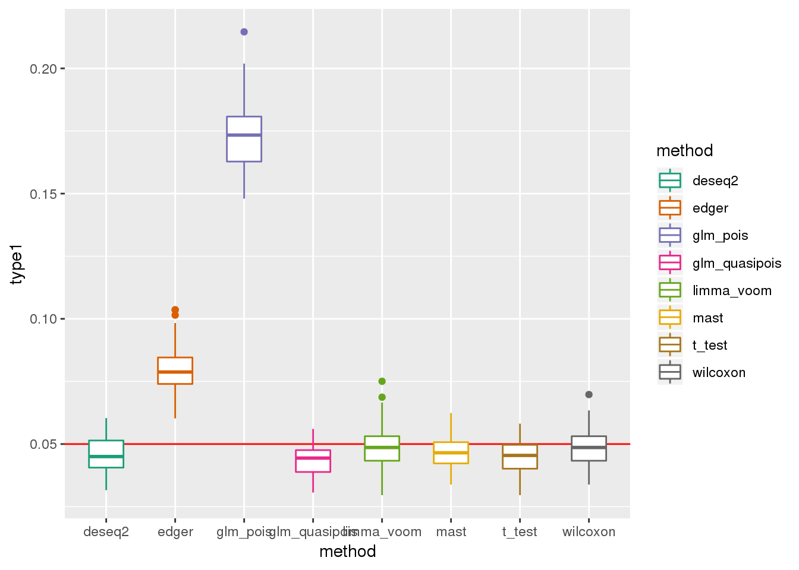
plotPval(dir_dsc=dir_dsc, dscoutput=out_simple_45, sim_case="sample_correlated",
sample_size=45, seed=2, xlims=c(0,1))Warning: Removed 26 rows containing non-finite values (stat_bin).Warning: Removed 16 rows containing missing values (geom_bar).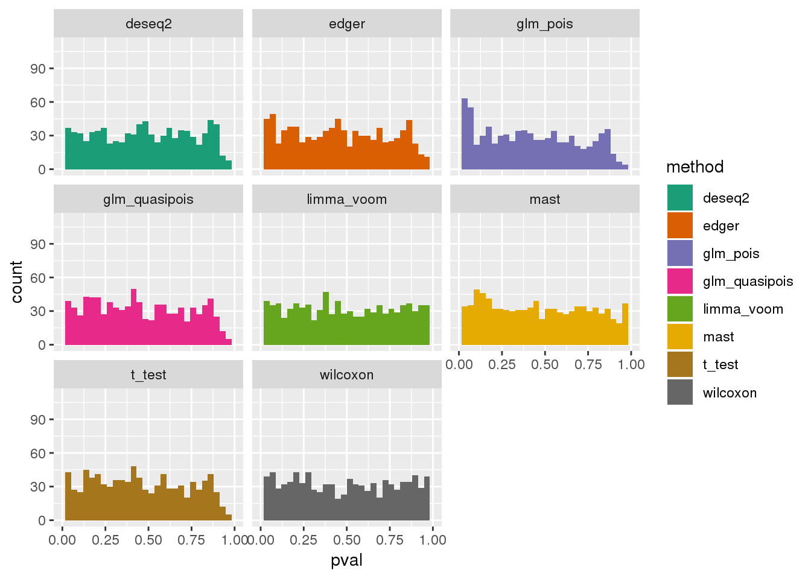
plotQQ(dir_dsc=dir_dsc, dscoutput=out_simple_45, sim_case="sample_correlated",
sample_size=45, seed=2)
plotQQ(dir_dsc=dir_dsc, dscoutput=out_simple_45, sim_case="sample_correlated",
sample_size=45, seed=2, xlims=c(0,.1), add.abline = F)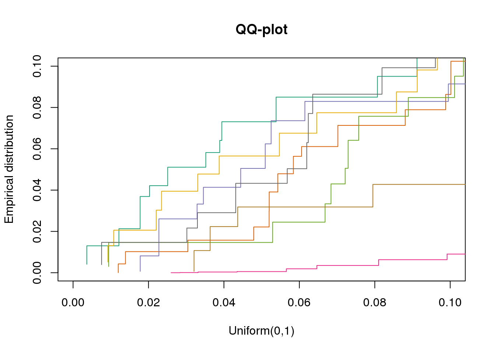
plotTypeI(dir_dsc=dir_dsc, dscoutput=out_simple_300, sim_case="sample_correlated",
sample_size=300, alpha=.05, title_label=NULL, seeds_seq=c(2:101))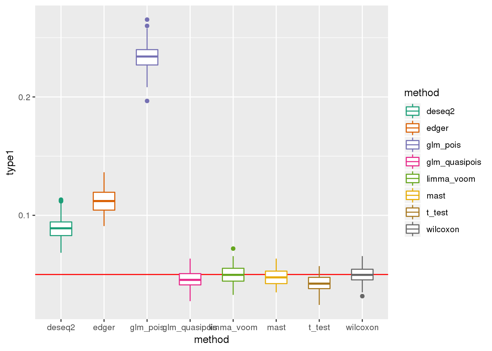
plotPval(dir_dsc=dir_dsc, dscoutput=out_simple_300, sim_case="sample_correlated",
sample_size=300, seed=2, xlims=c(0,1))Warning: Removed 44 rows containing non-finite values (stat_bin).
Warning: Removed 16 rows containing missing values (geom_bar).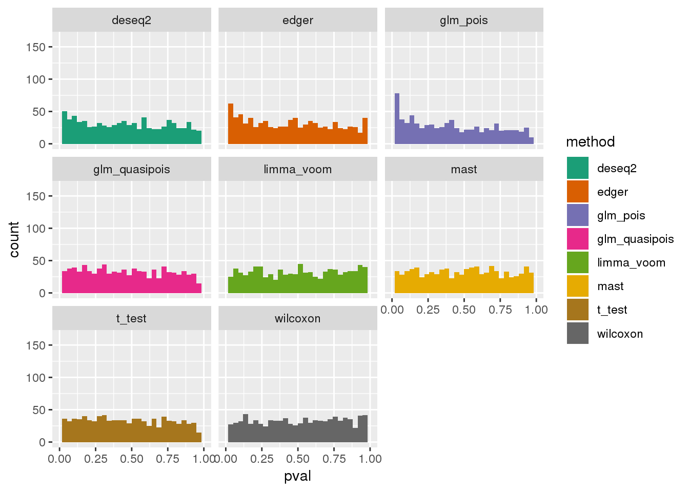
plotQQ(dir_dsc=dir_dsc, dscoutput=out_simple_300, sim_case="sample_correlated",
sample_size=300, seed=2)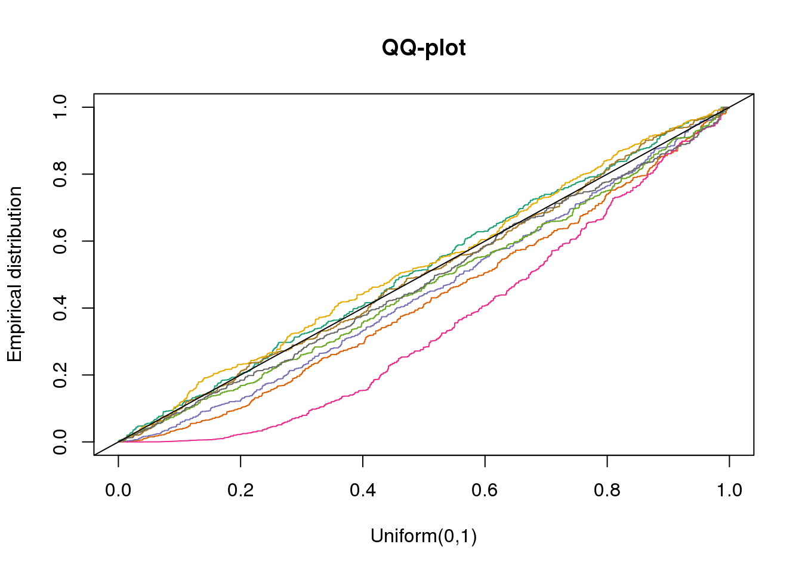
plotQQ(dir_dsc=dir_dsc, dscoutput=out_simple_300, sim_case="sample_correlated",
sample_size=300, seed=2, xlims=c(0,.1), add.abline = F)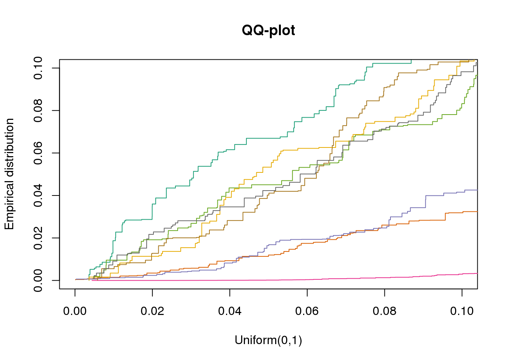
DESeq2 flags NA p-values for about 20 out of 946 genes on average across the 100 simulated datasets.
dir_dsc <- "/scratch/midway2/joycehsiao/dsc-log-fold-change/type1_simple"
sim_case <- "sample_correlated"
sample_size <- 45
dscoutput <- out_simple_45
res_simple_45 <- lapply(2:101, function(i) {
# print(i)
res <- get_res(dir_dsc, dscoutput=dscoutput, sim_case=sim_case, sample_size=sample_size, seed=i)
res <- do.call(rbind, res)
res_summary <- res %>% group_by(method) %>% summarise(type1=mean(pval<alpha, na.rm=T), nvalid=sum(!is.na(pval)))
res_summary$seed <- i
res_summary <- data.frame(res_summary)
return(res_summary)
})
res_simple_45 <- do.call(rbind, res_simple_45)
res_simple_45 %>% group_by(method) %>% summarise(nvalid_mean=mean(nvalid))All methods do worse when N=300 than when N=45. This is because p-values depend on sample size and get smaller as sample size increases.
Results on Data 2:
PBMC seven cell types: 2,683 samples and ~ 11,000 genes. 93% zeros in the count matrix.
dir_dsc <- "/scratch/midway2/joycehsiao/dsc-log-fold-change/type1_berge"
# out_berge <- dscquery(dir_dsc,
# targets=c("get_data", "get_data.seed", "get_data.n1", "method", "method.p"))
out_berge_45 <- dscquery(dir_dsc,
targets=c("get_data", "get_data.seed",
"get_data.n1", "get_data.n2", "method", "method.p"),
conditions="get_data.n1 = 45")
saveRDS(out_berge_45, file = "../output/test.Rmd/out_berge_45.rds")dir_dsc <- "/scratch/midway2/joycehsiao/dsc-log-fold-change/type1_berge"
out_berge_45 <- readRDS(file = "output/test.Rmd/out_berge_45.rds")
plotTypeI(dir_dsc=dir_dsc, dscoutput=out_berge_45, #sim_case="sample_correlated",
sample_size=45, alpha=.05, title_label=NULL, seeds_seq=c(2:101))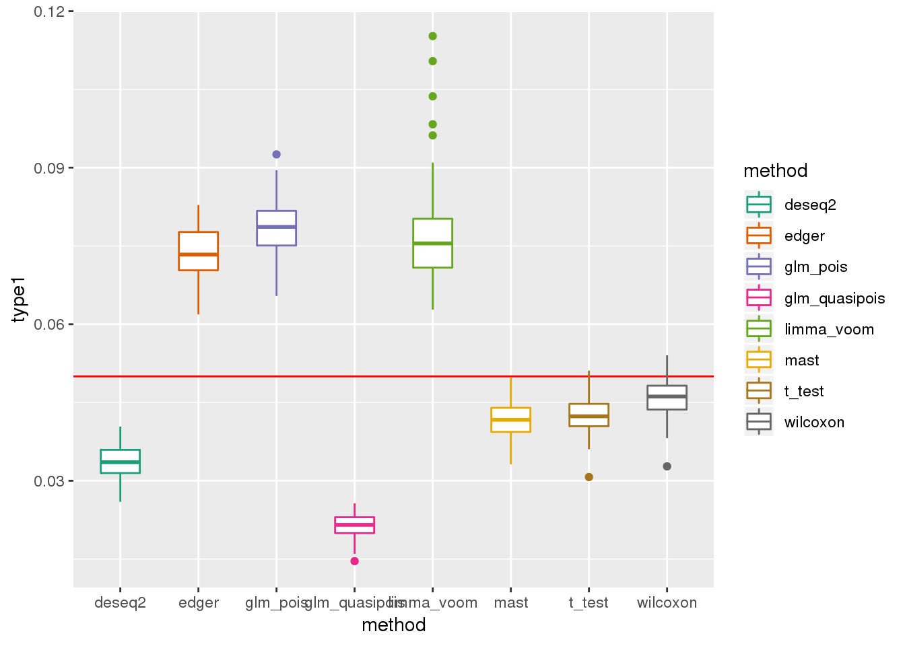
plotPval(dir_dsc=dir_dsc, dscoutput=out_berge_45, sim_case=NULL,
sample_size=45, seed=2, xlims=c(0,1), bins=20)Warning: Removed 75 rows containing non-finite values (stat_bin).Warning: Removed 16 rows containing missing values (geom_bar).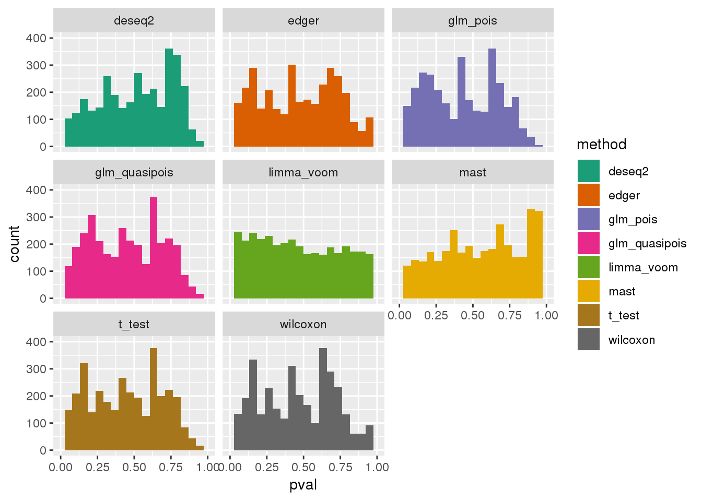
plotQQ(dir_dsc=dir_dsc, dscoutput=out_berge_45, sim_case=NULL,
sample_size=45, seed=2)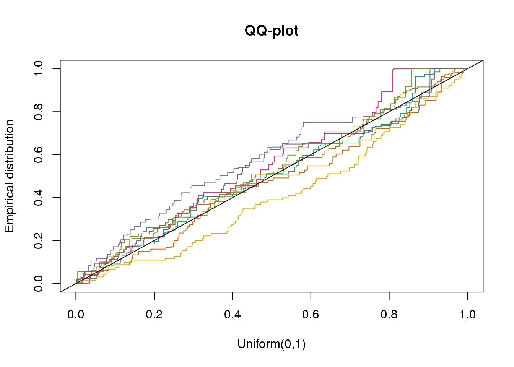
plotQQ(dir_dsc=dir_dsc, dscoutput=out_berge_45, sim_case=NULL,
sample_size=45, seed=2, xlims=c(0,.1), add.abline = F)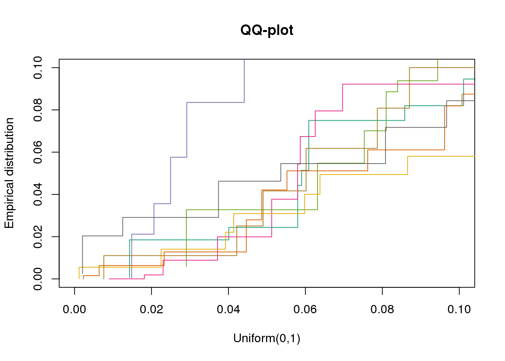
Why many bumps in the pvalue distribution in the ggplot histograms? Below shows that the same pvalue distribution plotted using baseplot is less bumpy.
dir_dsc <- "/scratch/midway2/joycehsiao/dsc-log-fold-change/type1_berge"
out_berge_45 <- dscquery(dir_dsc,
targets=c("get_data", "get_data.seed",
"get_data.n1", "get_data.n2", "method", "method.p"),
conditions="get_data.n1 = 45")Loading dsc-query output from CSV file.
Reading DSC outputs:
- method.p: not extracted (filenames provided)fl <- out_berge_45$get_data.output.file[out_berge_45$get_data.seed==2 & out_berge_45$method=="wilcoxon"]
fl_df <- readRDS(paste0(file.path(dir_dsc,fl),".rds"))
fl <- out_berge_45$method.output.file[out_berge_45$get_data.seed==2 & out_berge_45$method=="edger"]
fl_method <- readRDS(paste0(file.path(dir_dsc,fl),".rds"))
hist(fl_method$p, nclass=20)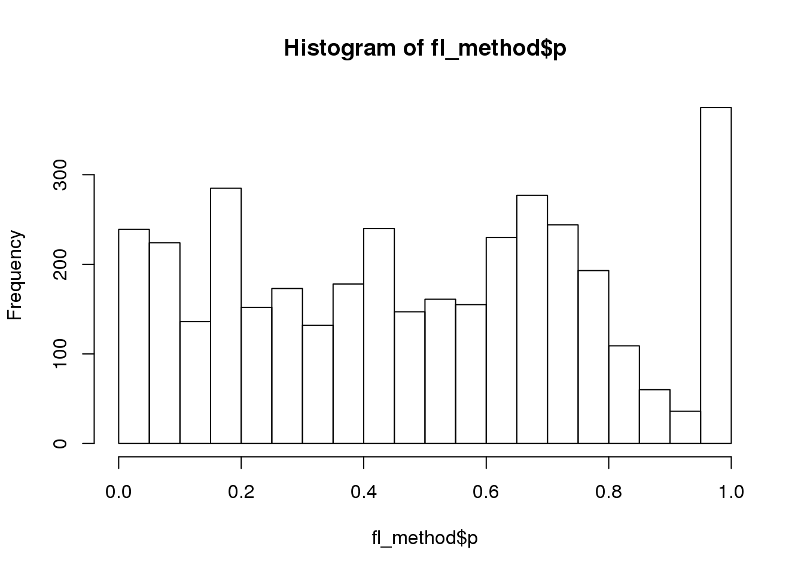
Session information
sessionInfo()R version 3.5.1 (2018-07-02)
Platform: x86_64-pc-linux-gnu (64-bit)
Running under: Scientific Linux 7.4 (Nitrogen)
Matrix products: default
BLAS/LAPACK: /software/openblas-0.2.19-el7-x86_64/lib/libopenblas_haswellp-r0.2.19.so
locale:
[1] LC_CTYPE=en_US.UTF-8 LC_NUMERIC=C
[3] LC_TIME=en_US.UTF-8 LC_COLLATE=en_US.UTF-8
[5] LC_MONETARY=en_US.UTF-8 LC_MESSAGES=en_US.UTF-8
[7] LC_PAPER=en_US.UTF-8 LC_NAME=C
[9] LC_ADDRESS=C LC_TELEPHONE=C
[11] LC_MEASUREMENT=en_US.UTF-8 LC_IDENTIFICATION=C
attached base packages:
[1] stats graphics grDevices utils datasets methods base
other attached packages:
[1] bindrcpp_0.2.2 ggplot2_3.1.0 dplyr_0.7.8 dscrutils_0.3.1.1
loaded via a namespace (and not attached):
[1] Rcpp_1.0.0 RColorBrewer_1.1-2 compiler_3.5.1
[4] pillar_1.3.0 git2r_0.23.0 plyr_1.8.4
[7] workflowr_1.1.1 bindr_0.1.1 R.methodsS3_1.7.1
[10] R.utils_2.7.0 tools_3.5.1 digest_0.6.18
[13] evaluate_0.12 tibble_1.4.2 gtable_0.2.0
[16] pkgconfig_2.0.2 rlang_0.3.0.1 yaml_2.2.0
[19] parallel_3.5.1 withr_2.1.2 stringr_1.3.1
[22] knitr_1.20 rprojroot_1.3-2 grid_3.5.1
[25] tidyselect_0.2.5 glue_1.3.0 R6_2.3.0
[28] rmarkdown_1.10 purrr_0.2.5 magrittr_1.5
[31] whisker_0.3-2 backports_1.1.2 scales_1.0.0
[34] htmltools_0.3.6 assertthat_0.2.0 colorspace_1.3-2
[37] labeling_0.3 stringi_1.2.4 lazyeval_0.2.1
[40] munsell_0.5.0 crayon_1.3.4 R.oo_1.22.0 This reproducible R Markdown analysis was created with workflowr 1.1.1